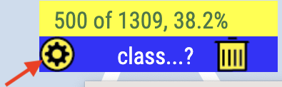
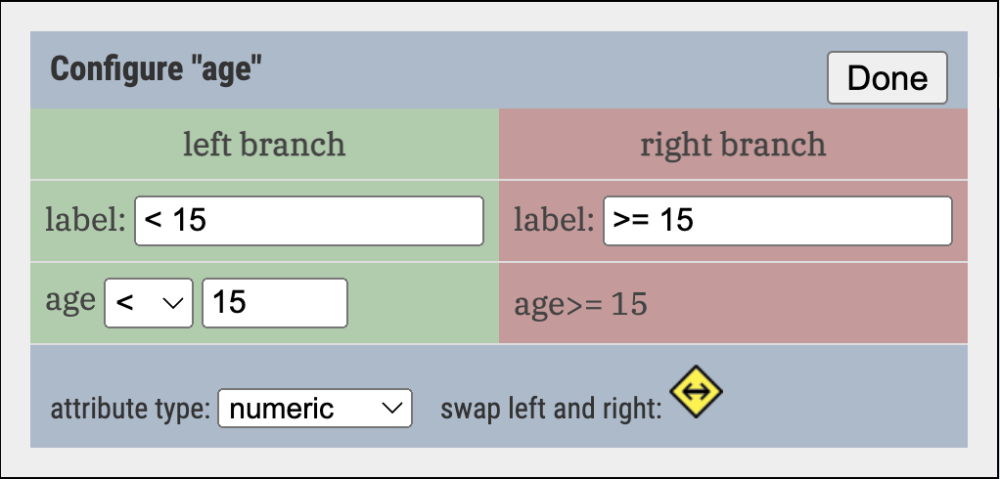
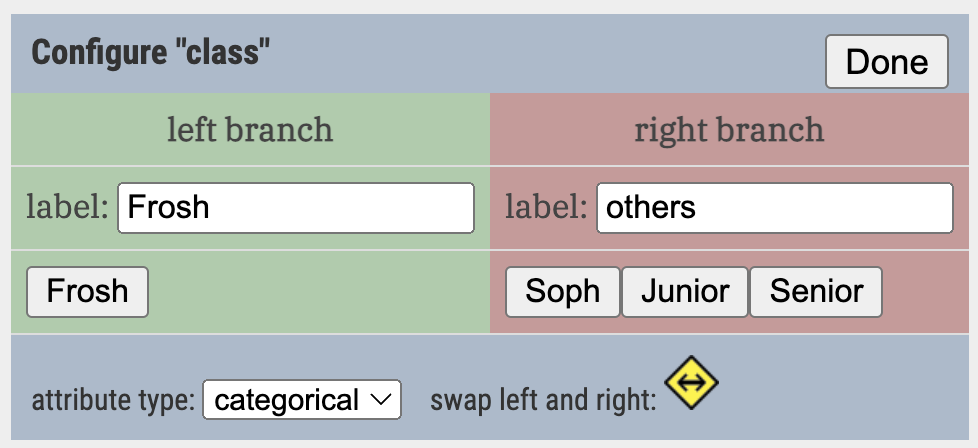
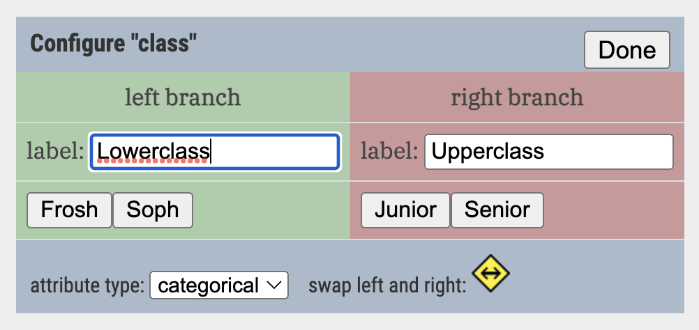

Configuring a node: the details
When you press the “gear” that appears when you hover over a node, the configuration box appears. That’s where you can set the cutpoint for a numeric attribute.

You can do other useful things as well.
You will be able to figure this box out pretty well on your own, but just in case, this page explains all the gory details.
Left and right
The double-headed arrow diamond near the lower right is a button that reverses the node. With that control, you can (for example) set up every branching so that the more “positive” result flows to the left. A tree is less confusing if the results are less mixed up.
Cutpoints

ageIf the attribute is numeric, you have to decide what value separates the positive from the negative values.
Enter the value you want for the cutpoint and use the menu to choose the operator that governs which value(s) go on the left.
Notice that you can use equality. This is useful when you want to isolate a single value for some reason.
More than two categorical values
Suppose you have four values in the columns, such as Freshman, Sophomore, Junior, and Senior. By default, Arbor picks one value for the left side, and puts the rest on the right:

Now suppose you want to split a node by whether the cases are upper or lower class.
Just click on a value to move it to the other side. For example, clicking on the Soph button will move it to the left side. It will look like this, although you have to edit the labels as we did:
